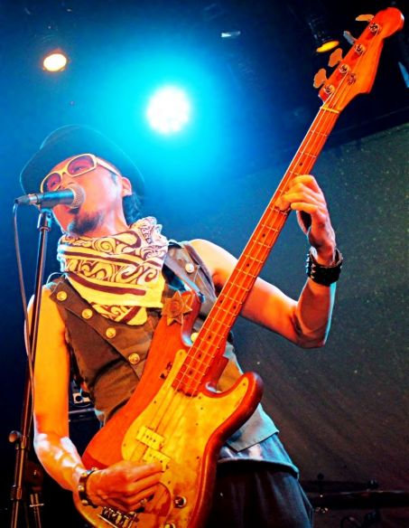
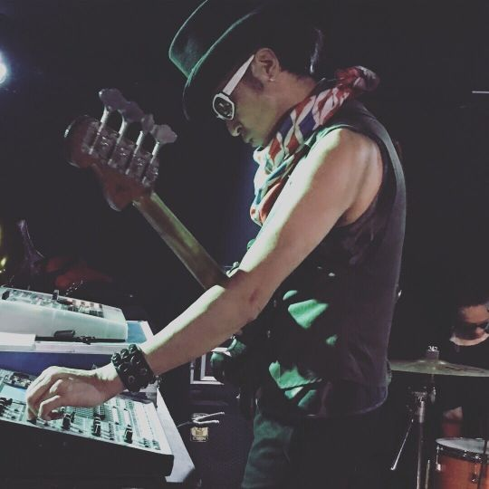
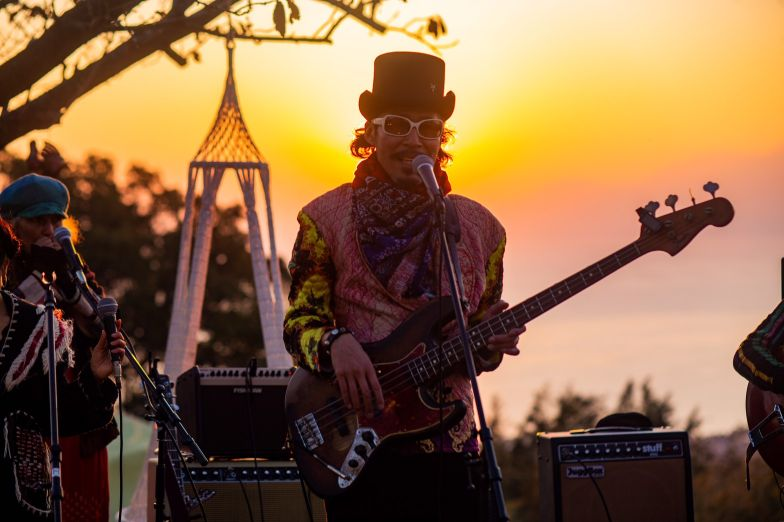

ー Musician ー
Dr.Tosh / 永井利充
Profile
ローザ・ルクセンブルグにて MIDI RECORDよりデビュー。その奇想天外な音楽性で多くのファンを魅了する。スーパーロック歌舞伎とのコラボによるヨーロッパツアーでも話題を呼ぶ。
その後、どんと(久富隆司)とともに伝説のバンド、BO GUMBOS を結成。中心メンバーとしてバンドを牽引する。数多くの名盤を残す。
ニューオリンズサウンドを基盤においたその独自のサウンドは唯一無二の存在であり、今もなお国内のアーティスト達に多大なる影響を及ぼしている。
ボ・ディドリー、ネビルブラザースのメンバーなどをゲストに迎えてのファーストアルバムは、レコード大賞ニューアーティストアルバム賞に輝く。その根幹を支えていたのが、オーディエンスを踊らせるグルーヴ感である。
そのグルーヴを生み出したベースマンこそが、Dr.Tosh こと 永井利充 である。
その他、UA、YUI、ヤン富田、真心ブラザーズ、エレファントラブはじめ数多くのアーティストとのコラボで話題を呼ぶ。(共演アーティスト:ボディドリー、ネビルブラザース、アラントゥーサン、忌野清志郎、YUKI、Nokko、泉谷しげる、東京スカパラダイスオーケストラ、サンディ、甲本ヒロト、など多数あり)
現在はcelebrationバンドHareHareでの活動も行っている。
News
| Time | Events | Join |
|---|---|---|
| 2020/1/12 | あけおめ！大新年会！ボガンボローザ club 251(下北沢) |
Dr.tosh/永井利充，Dr.kyOn，岡地曙裕，玉城宏志，うつみようこ，笠原直樹，小関純 (ゲスト)吾妻光良，井垣宏章，トモフスキー |
| 2020/1/23 | Soul of BO GUMBOS Hare Hare祝祭ツアー 晴れたら空に豆まいて(代官山) |
Hare Hare，佐藤タイジ，越路姉妹 |
| 2020/1/24 | Soul of BO GUMBOS Hare Hare祝祭ツアー 空飛ぶこぶたや(下北沢) |
Hare Hare，大久保ノブオ(ポカスカジャン) |
| 2020/1/25 | Soul of BO GUMBOS Hare Hare祝祭ツアー TIENDA(飯能) |
Hare Hare |
| 2020/1/27 | どんと20周年メモリアルday虹の大法要パーティ フィオーレの森neonera(溝の口) |
Hare Hare，小嶋さちほ，ラキタ |
| 2020/1/28 | どんと20周年祭"魂の成人式" club Que(下北沢) |
Dr.tosh/永井利充，Dr.kyOn，岡地曙裕，玉城宏志，踊ってばかりの国，ナツノムジナ，ラキタ，小嶋さちほ，町田康，他 |
| 2020/1/29 | Soul of BO GUMBOS Hare Hare祝祭ツアー chit chat(新百合ヶ丘) |
Hare Hare , ラキタ |
- 

- 
- 
Active
〜PR Movie〜
〜Youtube〜
Social
Contact